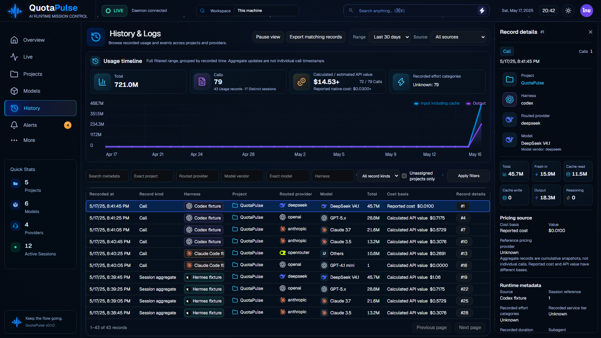

ผลตรวจและงานที่ยังเปิดอยู่ · ภาพรวมทั้ง 8 หน้าเดิม
แอปจริงผ่าน API โดยใช้ข้อมูลสังเคราะห์แยกสำหรับทดสอบ ภาพนี้ไม่ใช่ข้อมูลลูกค้าและไม่ใช่การรับรองว่าเหมือน concept 99–100% กราฟยังแสดงยอดรวมตามเวลาที่บันทึก ไม่ใช่เวลาของแต่ละ call

Tooltip: English dark 1672px · ไทยสว่าง 1672px · ไทยสว่าง 390px